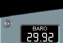
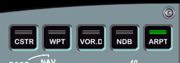
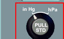
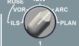
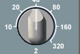
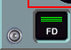
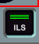
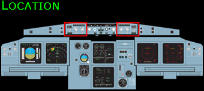
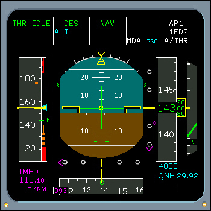

EFIS Control Panel
|  |  |
Barometric Selector in Hg
The Barometric Selector selects barometric reference. When the selector is pulled, the associated altimeter is set to the standard barometric reference setting (29.92 In Hg or 1013 hPa), and STD is displayed in the barometric window and on the PFD. Pushing the selector enables selection of a new barometric reference.
OUTER SELECTOR - The Outer Selector selects units of reference in inches of mercury (In Hg) or hectopascals (hPa).
INNER SELECTOR - The Inner Selector provides selection of the reference value displayed in the barometric window and on the PFD.
|  |
| < PREVIOUS | NEXT > |